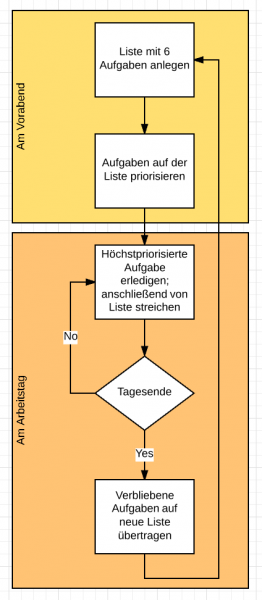
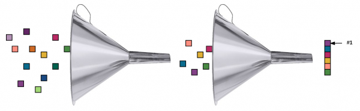

Täglich mehr schaffen mit der Ivy-Lee-Methode
Wenn Sie notorisch das Gefühl haben, zu wenig zu schaffen, dann habe ich hier eine sehr einfache Methode für Sie, die ein nützliches Werkzeug sein kann, damit Sie mehr schaffen. Sie soll zurückgehen auf einen Mitbegründer der Public Relations (PR): Ivy Ledbetter Lee.
Um die Ivy-Lee-Methode rankt sich eine Geschichte, die ich mehrfach im Internet gefunden habe. Wenn sie wahr ist, dann hat Ivy Lee diese Methode zumindest in einem Unternehmen für einen Tagessatz von mehreren Hunderttausend Dollar vermittelt. Und das, weil der Unternehmer nach einigen Wochen entschied, dass durch sie dieser Betrag und noch weit mehr gewonnen war. Wenn Sie mögen, lesen Sie hier (auf Englisch) die Geschichte. Ich möchte mich hier gleich auf die Methode konzentrieren:
Die Ivy-Lee-Methode
- Am Ende eines Arbeitstages machen Sie eine Liste der sechs Aufgaben, die sie am nächsten Arbeitstag erledigen wollen.
- Priorisieren Sie diese sechs Aufgaben. Ernsthaft.
- Am nächsten Tag beginnen Sie mit der Aufgabe am Anfang der Liste, d.h. mit der am höchsten priorisierten. Arbeiten Sie die Aufgabe ab, bis sie fertig ist.
- Gehen Sie in dieser Weise die Aufgaben auf der Liste von oben nach unten durch.
- Was Sie am Ende des Tages nicht geschafft haben, übertragen Sie auf die Liste der sechs Aufgaben für den nächsten Tag. Dann beginnen Sie wieder bei Schritt 1.
Das ist alles. Eine simple Routine, die jeder mit ein klein wenig Willen durchlaufen kann:

Warum funktioniert die Ivy-Lee-Methode
Die Methode funktioniert. Wenden Sie sie an und sie werden sehen, dass sich Ihre Situation verbessert. Sie werden mehr schaffen. Aber warum?
Es lohnt sich darüber nachzudenken, was die Prinzipien hinter der und Bedingungen für die Funktionsweise der Ivy-Lee-Methode sind. Denn ansonsten sind Sie frustriert, falls es (noch) nicht funktioniert. Oder Sie halten sich unnötig sklavisch an Details fest und demotivieren sich. Wann immer ja eine Verbesserung durch Befolgung eines Rezeptes erreicht werden soll, kann ein Cargo-Kult entstehen.
Also, was macht die Ivy-Lee-Methode aus? Ich werfe darauf mal einen Blick durch meine Lean-Digital-Office-Brille. Wenn die Methode dazu führt, dass effektiver und effizienter, d.h. flüssiger gearbeitet wird, dann muss sie helfen, Verzögerungen, Abweichungen und Wiederholungen zu vermeiden.
Vermeiden von Abweichungen
Zunächst einmal ist die Methode sehr einfach. Sie selbst erzeugt also keine spürbaren Abweichungen von der eigentlichen Arbeit, indem man sich immer wieder umständlich mit der Methode auseinandersetzen müsste. Insbesondere dienen aber die vorabendliche Planungszeit und die priorisierte Liste dazu, Abweichungen zu vermeiden.
In zwei Priorisierungsschritten gelangen Sie zu der einen Sache, um die Sie sich am nächsten Tag unverzüglich kümmern müssen. Das ist sozusagen Ihre Highlander-Aufgabe 😉 Und falls danach noch Zeit ist, wissen Sie genau, was anschließend Ihrer vollen Aufmerksamkeit bedarf.

Ihre Tagesarbeitszeit können Sie also zu 100% den abzuarbeitenden Aufgaben widmen. Sie wissen am Morgen durch einen Blick auf die priorisierte Liste, was zu tun ist. Und wenn Sie das erledigt haben, dann haken Sie diese Aufgabe ab und beginnen unverzüglich mit der nächsten auf der Liste. Die Methode steht nicht im Weg.
Abweichungen in Form von Aufmerksamkeit für weniger wichtige Aufgaben, wird ebenfalls entgegengewirkt. Sie tun ja nur, was auf der Liste steht. Tauchen andere Aufgaben während der Tagesarbeitszeit auf, notieren Sie die höchstens auf einen Zettel, um sie in der abendlichen Planungsphase zu berücksichtigen. Die Ivy-Lee-Methode setzt Sie für einen Tag also quasi auf Schienen, denen Sie folgen müssen. Abweichungen ausgeschlossen. Ein Kurswechsel ist erst wieder morgen möglich.
Die Zeit, die Sie der Methode selbst widmen müssen, ist konzentriert auf vielleicht 15 oder 30 Minuten am Abend. Dort würde ich sie jedoch nicht einmal als Abweichung kategorisieren, sondern als eine wiederkehrende Aufgabe, die eben auch zu erledigen ist. Die ist sogar von strategischer Bedeutung, weil sie der Sicherstellung ihrer grundsätzlichen Produktivität dient. Es gehört zu Ihren Aufgaben, sich sauber zu organisieren.
Vermeiden von Verzögerungen
Indem Sie allabendlich Ihre Aufgaben überdenken, steigt die Wahrscheinlichkeit, dass Sie sie besser verstehen und damit Abhängigkeiten erkennen. Abhängigkeiten sind eine oft unvermutet sprudelnde Quelle für Verzögerungen. Eigentlich wollen Sie eine Aufgabe flüssig erledigen – doch da bemerken Sie, dass Ihnen entscheidende Daten fehlen. Sie rufen einen Kollegen an, der meldet sich erst nach einer Viertelstunde zurück, dann braucht er nochmal 10 Minuten, um die Daten zu liefern, erst anschließend können Sie weitermachen. Ihre eigentliche Aufgabe wurde durch eine unvermutete Abhängigkeit um 25 Minuten verzögert.
Das ist eine Situation, die sich mit der Ivy-Lee-Methode entschärfen lässt. Sie können am Vorabend überlegen, zu welchen Aufgaben Ihnen noch etwas fehlt und priorisieren Sie noch nicht. Stattdessen nehmen Sie für den nächsten Tag auf den Zettel, zunächst nur die Abhängigkeit auszuräumen.
Außerdem vermeidet die Ivy-Lee-Methode die Entstehung von Multitasking. Die Regel lautet ja eindeutig: Arbeiten Sie an der Highlander-Aufgabe bis sie erledigt ist. Andere Aufgaben werden nicht begonnen, nur weil die Erledigung doch mal durch Wartezeiten stockt. Erst nach Erledigung nehmen Sie die nächste Aufgabe in Angriff!
Damit vermeidet die Ivy-Lee-Methode auch die Entstehung von zusätzlichen Rüstzeiten, die beim Multitasking immer wieder entstehen, wenn zwischen Aufgaben gesprungen wird. Rüstzeiten sind Verzögerungen, die beim Singletasking nicht existieren.
Und schließlich: Die Methode wirkt der Prokrastination entgegen. Die Planungsphase ist explizit. Sie steht fest in Ihrem Tageskalender. Das ist unumstößlich. So vermeiden Sie Unsicherheit am Morgen, wenn Sie frisch zur Arbeit erscheinen. James Clear nennt das „the friction of starting„. Denn wenn Sie morgens unsicher sind, was zu tun ist… dann verschieben Sie womöglich eine konsequente Beschäftigung damit, weil ja schon Dringendes auf dem Tisch liegt. Die Ablenkung im Tagesgeschäft lauert überall. So wird das wirklich Wichtige allzu schnell verzögert.
Vermeiden von Wiederholung
Verschwendung durch Wiederholung entsteht vor allem durch Qualitätsmängel. Wenn Mängel behoben werden, wird etwas getan, das eigentlich schon einmal getan wurde. Auch Qualitätsmängeln beugt die Ivy-Lee-Methode durch die Fokussierung auf nur eine Aufgabe zur Zeit vor. Verlässlichkeit in der Erledigung wird höher bewertet als der schnellstmögliche Beginn möglichst vieler Aufgaben. Das Zauberwort lautet ein weiteres Mal Singletasking.
Zum einen stellen die zusätzlichen Rüstzeiten (oder „Umschaltzeiten“) beim Multitasking schon an sich Wiederholungen dar. Es werden ja (mentale) Zustände hergestellt, die vorher schon einmal existierten.
Darüber hinaus sind solche „Umrüstungen“ schnell fehlerbehaftet. Außerdem führt der Wechsel zwischen mehreren unabgeschlossenen Aufgaben zu mentalen Belastungen und Konzentrationsverlust. Qualitätsmängel sind da quasi vorprogrammiert.
Das können Sie ignorieren – und dann sehr spät nach Auslieferung durch den Empfänger darauf aufmerksam gemacht werden. Oder Sie können es vorhersehen und Prüfphasen einbauen. Das jedoch sind ebenfalls Wiederholungen. Denn in Prüfungen vollziehen Sie nur nach, was Sie eigentlich vorher schon in hoher Qualität hätten erledigen sollen.
***
Mir gefällt die Ivy-Lee-Methode. Sie ist knackig und leicht umzusetzen. Ihre Arbeitsabläufe werden schlanker. In vielen Fällen zumindest. Und wenn nicht, dann stellen Sie mit der Methode einen Kontrast her, der Ihnen Gelegenheit gibt, genauer hinzuschauen, woran es liegt, dass die Arbeit noch nicht flutscht. Das ist der erste wichtige Schritt auf dem Weg zu mehr schaffen.
Typische Fragen, die die Methode aufwirft sind z.B. „Wie soll ich die sechs wichtigsten Aufgaben aus dem großen Stapel dessen, was noch zu erledigen ist, auswählen?“ oder „Wie soll ich denn bestimmen, was die höchste Priorität hat?“ oder „Wie soll ich mich ungestört auf die Abarbeitung der Aufgaben konzentrieren?“
Falls es also trotz der schönen Geschichte zur Ivy-Lee-Methode nicht gleich klappen sollte wie bei dem darin erwähnten Vorzeigeunternehmen, grämen Sie sich nicht. Nehmen Sie die Methode als Vergrößerungsglas, um genauer auf die Faktoren zu schauen, die bei Ihnen zu Abweichungen, Verzögerungen und Wiederholungen führen.
Weitere Artikel

KI als Copilot für die Assistenz
KI in Form von ChatGPT & Co sind hervorragende neue Werkzeuge im Office-Alltag, um produktiver und ja, auch kreativer, zu werden. Neugier statt Angst ist angezeigt im Umgang mit diesen Werkzeugen, die wie andere Werkzeuge auch …

Veränderung braucht Gewohnheit
Sowohl im Berufs-als auch im Privatleben sind wir ständig im Veränderungsmodus. Manche Veränderungen wollen wir umsetzen, manche müssen wir mitmachen. Wir alles wissen, dass Veränderung nie leicht sind und je länger wir etwas auf …